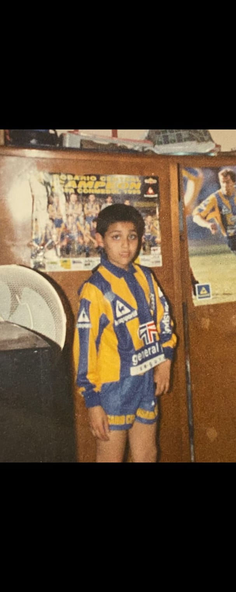

Me recuerdo a mí mismo como un morochito flaquito, pero con una energía que no entraba en el cuerpo. Amaba el fútbol con todo mi corazón; empecé siendo el 10 del equipo, pero con el tiempo me pasaron a jugar de 5, y ahí descubrí que también me gustaba pelear cada pelota como si fuera la última.
Pero un día llegó algo que me cambió la vida para siempre: Mortal Kombat. No entendía cómo podía existir algo así, con esa brutalidad, ese estilo, esa magia. Ese fue mi primer contacto real con el mundo gamer, y fue como abrir la puerta a un universo que jamás había imaginado.
Desde entonces, supe que la vida no era solo una cancha de barrio; también estaba llena de mundos por descubrir, con batallas que se libran en una pantalla, pero que despiertan la misma pasión y adrenalina que un gol en el último minuto.